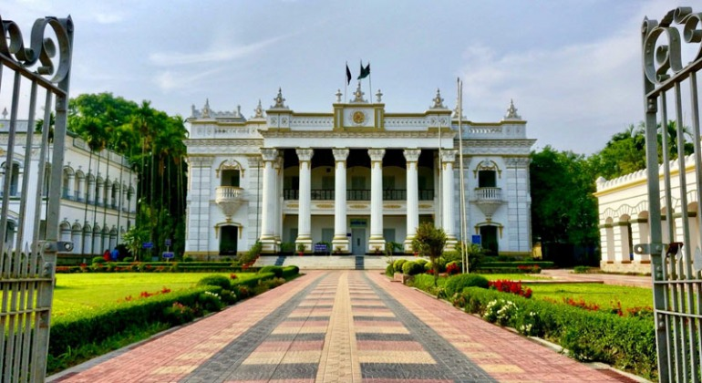
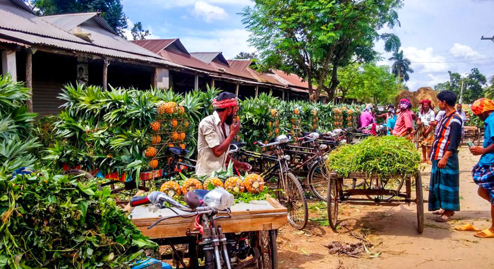
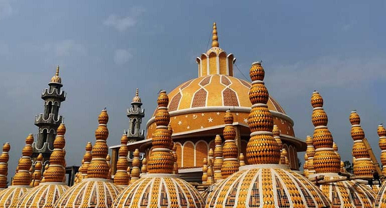
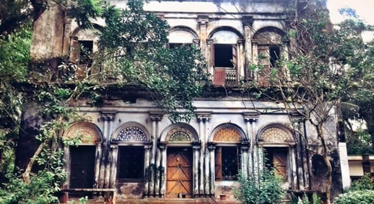
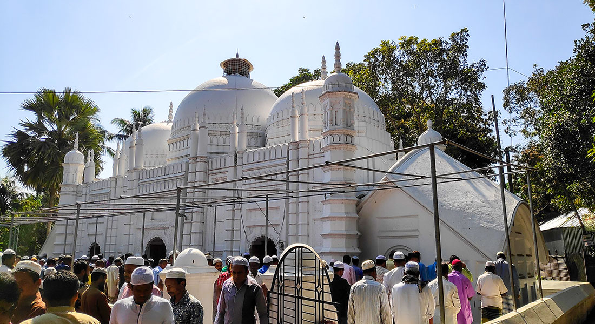
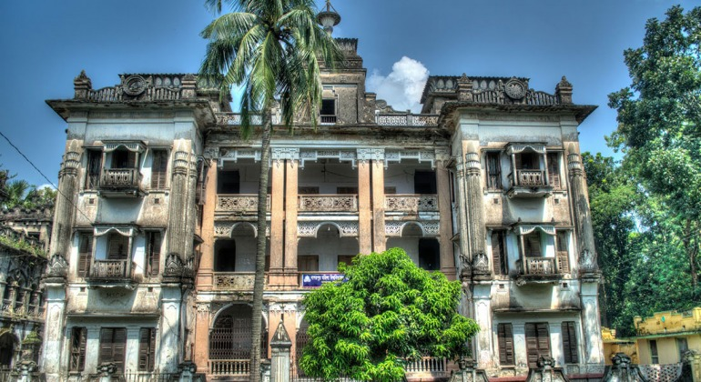
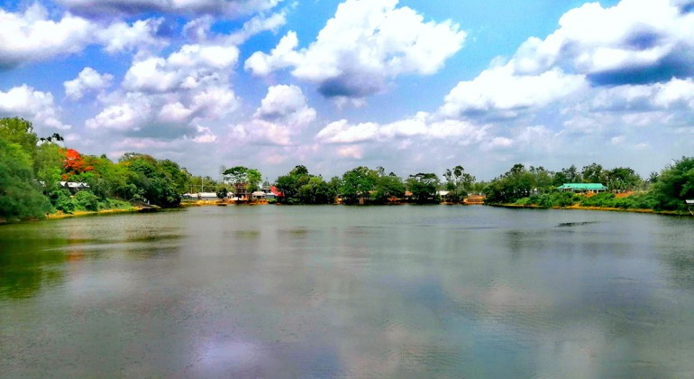
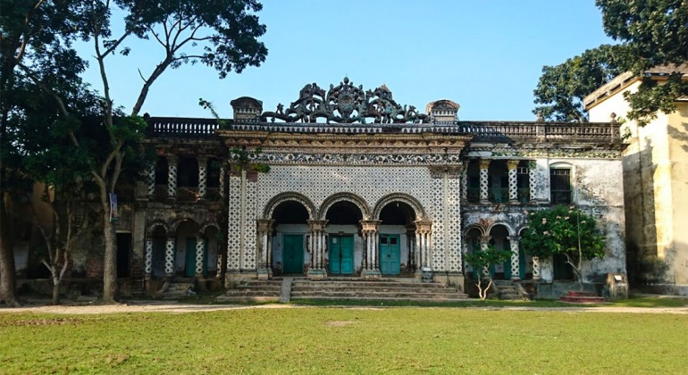
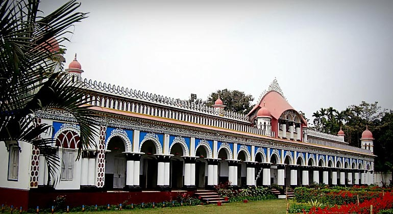
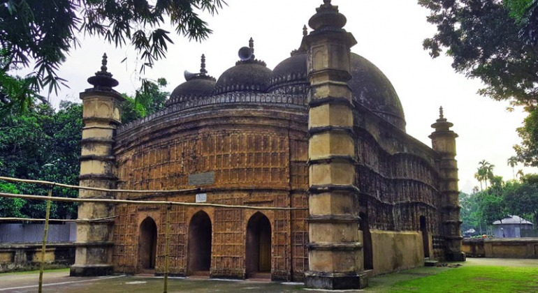

টাঙ্গাইল জেলা
টাঙ্গাইল জেলা
মহেরা জমিদার বাড়ি :
মহেড়া জমিদার বাড়ির (Mohera Jamindar Bari) মত সুন্দর এবং যত্নে সংরক্ষিত জমিদার বাড়ি বাংলাদেশে খুঁজে পাওয়া কঠিন। টাঙ্গাইল সদর থেকে প্রায় ১৮ কিলোমিটার দূরে আট একর জায়গা জুড়ে মহেড়া জমিদার বাড়ি বিস্তৃত। মহেড়া জমিদার বাড়ি প্রাচীন সভ্যতা ও ঐতিহ্যের অমূল্য নিদর্শন স্বরূপ মাথা উঁচু করে দাঁড়িয়ে আছে। জমিদার বাড়ির সাথেই ছোট পার্ক, চিড়িয়াখানা, পিকনিক স্পট ও বোট রাইডের ব্যবস্থা রয়েছে। রাজধানী ঢাকার বেশ কাছে হওয়ায় সকালে রওনা দিলে এক দিনেই জমিদার বাড়ি থেকে ঘুরে আসা যায়।
এই জমিদার বাড়ির প্রবেশ পথেই রয়েছে বিশাল দুইটি সুরম্য গেট। বিশাল তিনটি প্রধান ভবনের সাথে নায়েব সাহেবের ঘর, কাছারি ঘর, গোমস্তাদের ঘর, দীঘি ও আরো তিনটি লজ রয়েছে। প্রবেশ পথের আগেই বিশাখা সাগর নামে একটি দীঘি আছে। মূল ভবনে পিছনের দিকে পাসরা পুকুর ও রানী পুকুর নামে আরো দুইটি পুকুর রয়েছে।
জলছত্র আনারস হাট :
বাংলাদেশের বেশ কয়েকটি অঞ্চলে আনারসের চাষ হলেও টাঙ্গাইল জেলার মধুপুরের উৎপাদিত আনারসের রয়েছে বিশেষ খ্যাতি। সমগ্র মধুপুর জুড়েই প্রচুর আনারসের চাষ হয়। আনারস কেনাবেচার জন্য মধুপুরের জলছত্র এলাকায় ঢাকা মহাসড়কের দুই পাশে প্রতি সপ্তাহের শুক্র ও মঙ্গলবার আনারসের বিশাল এক হাট বসে। প্রতিবছর বর্ষায় সারাদেশে যে আনারস পাওয়া যায় তার অধিকাংশই মধুপুর থেকে দেশজুড়ে ছড়িয়ে যায়। এদের মধ্যে মধুপুরের অরুনখোলা, ষোলাকুঁড়ি, আউশনাড়া ইউনিয়নে উৎপাদিত জলডুগি ও জায়ান্টকিউ আনারস সবচেয়ে জনপ্রিয়।
আনারসের ভরা মৌসুমে জলছত্র হাট ২৫ মাইল মোড় থেকে পুলিশ ফাঁড়ি পর্যন্ত বিস্তৃত হয়ে থাকে। সকাল বেলা থেকেই চাষীরা নিজেদের জমিতে উৎপাদিত আনারস বোঝাই করে হাটে নিয়ে আসে। আর দেশের বিভিন্ন স্থান থেকে ক্রেতারা আসে এখান থেকে পাইকারি দামে আনারস কিনে নিয়ে যায়। আনারস ছাড়াও এই হাটে কলা, কামরাঙ্গা, আমড়া ও কচুর বেচাকেনা হয়ে থাকে। আনারস কেনা-বেচা ঘিরে বিশাল এই কর্মযজ্ঞ এই হাটে না আসলে বুঝা সম্ভব না। জলছত্র বাজার ছাড়াও গারো বাজার, মধুপুর বাজার ও ২৫ মাইল বাজারেও আনারসের কেনা-বেচা হয়ে থাকে। আনারসের হাট দেখার পাশাপাশি চোখ জুড়ানো আনারস বাগান, পাকা আনারসের মৌ মৌ গন্ধ ও গ্রামীণ প্রকৃতির মনোরম দৃশ্য প্রকৃতিপ্রেমীদের মুগ্ধ করে।
২০১ গম্বুজ মসজিদ :
২০১ গম্বুজ মসজিদ (201 Gombuj Masjid/The 201 Dome Mosque) টাঙ্গাইল জেলার গোপালপুর উপজেলার দক্ষিণ পাথালিয়া গ্রামে অবস্থিত, যা ইতিমধ্যেই পৃথিবীর সর্বাধিক সংখ্যক গম্বুজ বিশিষ্ট মসজিদের স্বীকৃতি পেয়েছে। আর মিনারের উচ্চতার দিক দিয়ে এই মসজিদটির অবস্থান দ্বিতীয়। মসজিদের ছাদে সর্বমোট ২০১ টি কারুকার্যময় গম্বুজ থাকার কারণে মসজিদটি ‘২০১ গম্বুজ মসজিদ’ নামে পরিচিতি লাভ করে।
২০১৩ সালের জানুয়ারি মাসে মুক্তিযোদ্ধা রফিকুল ইসলাম কল্যাণ ট্রাস্টের উদ্যোগে ১৫ বিঘা জমির ওপর বিশাল মসজিদ ও মসজিদ কমপ্লেক্স নির্মাণ কাজ শুরু হয়। দ্বিতল এই মসজিদের দৈর্ঘ্য ১৪৪ ফুট এবং প্রস্থ ১৪৪। দৃষ্টিনন্দন মসজিদের ছাদে অবস্থিত মূল গম্বুজটি উচ্চতায় ৮১ ফুট এবং এই গম্বুজের চারপাশকে ঘিরে ১৭ ফুট উচ্চতার আরো ২০০টি গম্বুজ তৈরি করা হয়েছে। মসজিদের চার কোণায় ১০১ ফুট উঁচু ৪ টি মিনার মিনার রয়েছে। এছাড়াও ৮১ ফুট উচ্চতার চারটি মিনার পাশাপশি স্থাপন করা হয়েছে। আর মসজিদের পাশে মূল মিনারটি নির্মাণ করা হয়েছে, যার উচ্চতা ৪৫১ ফুট। ২০১ গম্বুজ মসজিদে এক সঙ্গে প্রায় ১৫ হাজার মুসল্লির নামাজ আদায়ের সুযোগ রয়েছে। মসজিদের দেয়ালে অংকিত রয়েছে সম্পূর্ণ কোরআন শরিফ। আর মসজিদের প্রধান দরজা তৈরীতে ব্যবহার করা হয়েছে ৫০ মণ পিতল।
এছাড়া মসজিদ কমপ্লেক্সে রয়েছে লাশ রাখার হিমাগার, বিনা মূল্যের হাসপাতাল, এতিমখানা, বৃদ্ধাশ্রম, দুঃস্থ মুক্তিযোদ্ধা ও তাদের পরিবারের পুর্নবাসনের ব্যবস্থা।
মোকনা জমিদার বাড়ি :
নাগরপুর উপজেলায় অবস্থিত ঐতিহ্যবাহী মোকনা জমিদার বাড়ি (Munkona Zamidar Bari) টাঙ্গাইল জেলার প্রাচীন জমিদার বাড়ীগুলোর মধ্যে অন্যতম এক দর্শনীয় স্থান। দ্বিতল ভবন বিশিষ্ট মোকনা জমিদার বাড়িটি ফুল লতা-পাতার বিভিন্ন কারুকার্যে সুসজ্জিত। কালের বিবর্তনে জমিদার বাড়ির আদিম সৌন্দর্য ও কারুকার্যময় নকশা বিলীন হয়ে গেলেও নাগরপুরের তৎকালীন জমিদারিত্বের প্রতীক হিসেবে শত বছরের পুরনো এই জমিদার বাড়িটি আজো টিকে আছে।
ঢাকা থেকে মোকনা জমিদার বাড়ীতে যাওয়ার ক্ষেত্রে প্রথমে টাঙ্গাইল শহরে আসতে হবে। ঢাকার মহাখালি বা কল্যাণপুর থেকে টাঙ্গাইল বা ধনবাড়ীগামী বাসে টাঙ্গাইল যাওয়া যায়। টাঙ্গাইল জেলার নাগরপুর থেকে মামুদনগর ইউনিয়ন পরিষদের ধলেশ্বরী নদী পার হয়ে মোকনা জমিদার বাড়ীতে যেতে পারবেন।
পাকুল্লা মসজিদ :
টাঙ্গাইল জেলার দেলদুয়ার উপজেলার পালপাড়ায় পাকুল্লা বাজারের কাছে তিন গম্বুজ বিশিষ্ট পাকুল্লা মসজিদ (Pakulla Jame Masjid) অবস্থিত। আনুমানিক ১৭শ শতকের শুরুর দিকে নির্মিত আয়তাকৃতির পাকুল্লা মসজিদের দৈর্ঘ্য ১৪.৭৭ মিটার, প্রস্থ ৫.৮৫ মিটার এবং মসজিদের দেয়ালগুলো ১.২৫ মিটার পুরু। পাকুল্লা মসজিদের সাথে দিল্লির আওরঙ্গজেবের মতি মসজিদ, বর্ধমানে খাজা আনোয়ার শহীদের সমাধি এবং ঢাকার কাজী খাজা শাহবাজের মসজিদের সাদৃশ্য রয়েছে।
পাকুল্লা মসজিদের অভ্যন্তরীনভাগ খাঁজকাটা খিলান দিয়ে তিনটি ভাগে বিভক্ত। মসজিদের চারকোণায় বিদ্যামান ৪টি সুউচ্চ অষ্টভুজাকৃতির বুরুজ, ৩টি কারুকার্যমণ্ডিত প্রবেশ পথ ও পশ্চিম দেয়ালের ভিতরে চারকোণা বিশিষ্ঠ তিনটি নকশাকৃত অবতল মিহরাবের সমন্বয়ে মসজিদের মূল কাঠামো গড়ে তোলা হয়েছে। এদের মধ্যে অভ্যন্তরের কেন্দ্রীয় মিহরাবটি খাঁজকাটা বিশিষ্ট ও পার্শ্ববর্তী দুইটি মিহরাব খাঁজবিহীন। অষ্টভুজাকৃতি পিলারের উপর স্থাপিত তিনটি গম্বুজ মসজিদের সবচেয়ে বড় আকর্ষণ। তিনটি গম্বুজের মধ্যে কেন্দ্রীয় গম্বুজটি পাশের দুইটি গম্বুজ অপেক্ষা আকারে বড়। এছাড়া মসজিদের উভয় দিকে চৌচালা ধাঁচের ইট ও পলেস্তরায় দুইটি কক্ষ নির্মাণ করা হয়েছে। মূলত, মসজিদে শিক্ষারত ছাত্রদের অধ্যায়ন ও ইমামের থাকার জন্য বর্তমানে এই কক্ষ দুটি ব্যবহার করা হয়।
নাগরপুর চৌধুরী বাড়ী :
ঊনবিংশ শতাব্দীতে টাঙ্গাইলের নাগরপুর উপজেলায় জমিদার যদুনাথ চৌধুরী কারুকার্যমণ্ডিত নাগরপুর জমিদার বাড়ী (Nagarpur Zamidar Bari) প্রতিষ্ঠা করেন। প্রায় ৫৪ একর জায়গার উপর নান্দনিক সৌন্দর্যে নির্মিত এই জমিদার বাড়ী থেকেই চৌধুরী বাড়ীর প্রথম পুরুষ যদুনাথ চৌধুরী ও তার বংশধর উপেদ্র মোহন চৌধুরী, জগদীন্দ্র মোহন চৌধুরী ও শশাঙ্ক মোহন চৌধুরী জমিদারীত্ব করতেন। নাগরপুর চৌধুরী বাড়ীর পূর্বে ধলেশ্বরী ও পশ্চিমে যমুনা নদী বয়ে চলেছে। কথিত আছে যদুনাথ চৌধুরী নাগরপুরকে কোলকাতার মতো করে সাজানোর পরিকল্পনা থেকেই নাগরপুর ও কোলকাতার নৌপথকে কেন্দ্র করে নাগরপুরে এই চৌধুরী বাড়ী নির্মাণ করেন। পরবর্তীতে উপেদ্র মোহন চৌধুরীর বড় ছেলে জমিদার সতীশ চন্দ্র চৌধুরী নাগরপুরে স্কুল, কলেজ, মন্দির, দাতব্য চিকিৎসালয়, খেলার মাঠ ও হাট বাজার প্রতিষ্ঠা করেছিলেন। তৎকালীন ব্রিটিশ সরকার সতীশ চন্দ্র চৌধুরীর জনহিতকর কর্মকাণ্ডের স্বীকৃতি স্বরূপ তাঁকে “রায় বাহাদুর” খেতাবে ভূষিত করেন।
পাশ্চত্য ও মোঘল সংস্কৃতির মিশ্রণে নির্মিত চার তলা বিশিষ্ট নাগরপুর জমিদার বাড়ীতে রয়েছে অসংখ্য ছোট বড় ঘর, যার অভ্যন্তরে সুদৃশ্য শ্বেত পাথরের ছিল লক্ষণীয়। চৌধুরী বাড়ীর অন্যান্য স্থাপনার মধ্যে মূল ভবন, নহবত খানা, অতিথিমহল, শৈল্পিক কারুকার্য মণ্ডিত তিল তালা বিশিষ্ট ঘোড়ার দালান, পূজা আর্চনার ঝুলন দালান, পরীর দালান ও রঙমহল বিশেষভাবে উল্লেখ্য। নাগরপুর চৌধুরী বাড়ীর সাথে অবস্থিত রঙমহলের পাশেই ছিল ময়ূর, কাকাতোয়া, হরিণ ও ময়নার মতো বিভিন্ন প্রাণীতে সুসজ্জিত চিড়িয়াখানা। আর বাড়ীর দক্ষিণ দিকে ১১ একর জায়গার উপর “উপেন্দ্র সরোবর” নামের একটি দীঘি রয়েছে। বর্তমানে চৌধুরী বাড়ীর মূল ভবনে নাগরপুর মহিলা ডিগ্রি কলেজ স্থাপন করা হয়েছে।
সাগরদীঘি :
টাঙ্গাইল জেলার ঘাটাইল উপজেলা সদর থেকে ৩০ কিলোমিটার পূর্বে ঐতিহাসিক সাগরদীঘি (Sagardighi) অবস্থিত। প্রায় ১৩ একর জায়গা জুড়ে পাল আমলের সাগর রাজার নেতৃত্বে এই বিখ্যাত দীঘিটি খনন করা হয়। সাগরদীঘিকে কেন্দ্র করে গড়ে উঠা এলাকার পূর্ব নাম “লোহিনি” হলেও বর্তমানে এটি সাগরদীঘি নামে পরিচিতি লাভ করেছে।
লোকমুখে প্রচলিত আছে সাগর রাজা প্রজাদের পানির কষ্ট দূর করার উদ্দেশ্যে এই জলাশয়টি খনন করেছিলেন। খননের পর জলাশয়ে কোন পানি উঠেনি, রাজা এক স্বপ্নাদেশে রানীকে দীঘিতে নামানোর নির্দেশনা পান। পরবর্তীতে রানীকে দীঘিতে নামানোর পর পরই দীঘি পানি ভরে উঠলে রানীর জীবন বিপন্ন হয়। আবার অনেকের মতে, সাগর নামের ধর্মপরায়ণ এক কুমোরের আত্নত্যাগের মাধ্যমে এই দীঘিতে পানি উঠেছিল, যার ফলস্বরূপ দীঘির নামকরন করা হয় সাগর কুমোরের দীঘি বা সাগরদীঘি।
সাগরদীঘির পশ্চিম পাড়ে রয়েছে শান বাঁধানো ঘাটের ধ্বংসাবশেষ, যা মূলত রাজার বাসস্থান ছিল বলে ধারনা করা হয়। উত্তর ও দক্ষিণ দিকে আছে সাগর দীঘি উচ্চ বিদ্যালয় এবং সাগরদীঘি দাখিল মাদ্রাসা। এছাড়াও দীঘির দক্ষিণ পাশে সাগর রাজার পুত্র বনরাজ পাল প্রায় ২৫ একর জায়গার উপর আরেকটি দীঘি খনন করেন, যা “বইন্যা দীঘি” নামে পরিচিত।
পীরগাছা রাবার বাগান :
.jpg)
১৯৮৬ সালে টাঙ্গাইল জেলার মধুপুরের পীরগাছায় অপরূপ প্রকৃতির মেলবন্ধনে গড়ে তোলা হয়েছে পীরগাছা রাবার বাগান (Pirgachha Rubber Garden)। এখানে তিন হাজার একর জায়গা জুড়ে প্রায় ১ লাখ ৫৪ হাজার রাবার গাছ রয়েছে। অল্প সময়ের অবসরে যেকেউ ঢাকার কাছে পীরগাছা রাবার বাগান ঘুরে দেখে যেতে পারেন।
রৌদ্রোজ্জ্বল দিনে মধুপুর রাবার বাগানে সুউচ্চ গাছের সবুজ পাতার ফাঁক দিয়ে সোনালি রোদ উঁকি দিয়ে অকৃত্রিম সৌন্দর্যে ভরিয়ে তুলে চারপাশ। ভিন্ন ভিন্ন ঋতুতে ভিন্ন ভিন্ন সাজে সজ্জিত এই রাবার বাগানে আছে অসংখ্য ফল ও ফুলের গাছ। আর বাগানের মধ্য দিয়ে চলে গিছে বাগানের অফিসে যাওয়ার সুবিশাল রাস্তা। অফিসের পাশেই রয়েছে রঙ্গিন চালের ছাউনি ও রঙ্গিন ফুলের গাছ দিয়ে ঘেরা একটি আধাপাকা “গেস্ট হাউজ”। গেস্ট হাউজ থেকে বৃষ্টি কিংবা জ্যোৎস্নার দিনে রাবার বাগানের অপরূপ দৃশ্য দেখতে সবচেয়ে বেশি সুন্দর লাগে।
রাবার বাগানের অফিস থেকে কিছুটা দূরে রয়েছে সুবিশাল রাবার কারখানা। এখানে রাবার গাছ থেকে সাদা কাঁচা রাবার সংগ্রহ করে প্রক্রিয়া জাতকরণের মাধ্যমে বড় বড় রাবার শিট বানানো হয়। আর কারখানার বিভিন্ন প্রক্রিয়াগুলো নিজের চোখে দেখা নিঃসন্দেহে দারুণ এক অভিজ্ঞতা। এছাড়া পীরগাছা রাবার বাগানের মাঝামাঝি ও শেষ প্রান্তে আছে গারো আদিবাসীদের বসতি এবং নানান রকম বন্যপ্রানীর আবাস মধুপুরের গড়।।
পরীর দালান :
ঐতিহাসিক পরীর দালান (Porir Dalan) টাঙ্গাইল জেলার গোপালপুর উপজেলার হেমনগর গ্রামে অবস্থিত। হেমনগর জমিদার বাড়ি হিসাবেও সুপরিচিত পরীর দালানের মোট জমির পরিমাণ প্রায় ৬০ একর। এখানে পরীদের আবাস্থল বা পরীদের নির্মিত ভবনের দেখা পাওয়া না গেলেও দিল্লি ও কলকাতার কারিগর দ্বারা তৈরি সুন্দর কারুকার্যমণ্ডিত স্থাপনা আগত দর্শনার্থীদের মুগ্ধ করে। পরীর দালানের দেয়াল, পিলার এবং দরজায় রঙ্গিন কাচে তৈরি ফুল, লতা, তারা, গাছের নকশা, দামি কড়ি ও পাথরে সুসজ্জিত দুইটি পরীর ভাস্কর্য বিশেষভাবে উল্লেখযোগ্য। রাজবাড়ির উপর নির্মিত দুইটি রাজসিক পরীর ভাস্কর্যের কারণেই মূলত এই দালানের নাম হয় এঞ্জেল হাউজ বা পরীর দালান।
রৌদ্রোজ্জ্বল দিনে মধুপুর রাবার বাগানে সুউচ্চ গাছের সবুজ পাতার ফাঁক দিয়ে সোনালি রোদ উঁকি দিয়ে অকৃত্রিম সৌন্দর্যে ভরিয়ে তুলে চারপাশ। ভিন্ন ভিন্ন ঋতুতে ভিন্ন ভিন্ন সাজে সজ্জিত এই রাবার বাগানে আছে অসংখ্য ফল ও ফুলের গাছ। আর বাগানের মধ্য দিয়ে চলে গিছে বাগানের অফিসে যাওয়ার সুবিশাল রাস্তা। অফিসের পাশেই রয়েছে রঙ্গিন চালের ছাউনি ও রঙ্গিন ফুলের গাছ দিয়ে ঘেরা একটি আধাপাকা “গেস্ট হাউজ”। গেস্ট হাউজ থেকে বৃষ্টি কিংবা জ্যোৎস্নার দিনে রাবার বাগানের অপরূপ দৃশ্য দেখতে সবচেয়ে বেশি সুন্দর লাগে।
ধনবাড়ি নবাব মঞ্জিল :
ধনবাড়ি নবাব মঞ্জিল (Dhanbari Nawab Manzil) বাংলাদেশের ঐতিহ্যবাহী রিসোর্ট, যা স্থানীয়ভাবে নবাব বাড়ি বা ধনবাড়ি নবাব প্যালেস নামে পরিচিত। নবাব আলী চৌধুরীর বর্তমান উত্তরসূরিরা টাঙ্গাইল জেলার এই ঐতিহ্যবাহী রাজবাড়ির দেখাশুনা করছেন। পর্যটকদের থাকার জন্য এখানে কয়েকটি কটেজ নির্মাণ করা হয়েছে। নবাব আলী চৌধুরীর পরিবারের উত্তরসূরী নবাব হাসান আলী চৌধুরী পূর্ব পাকিস্তানের শিল্প মন্ত্রী ছিলেন এবং স্বাধীনতার পর ১৯৭৮ সালে তিনি বাংলাদেশের সংসদ সদস্য ছিলেন। নবাব হাসান আলী চৌধুরীর কন্যা সৈয়দা আশেক আকবর ১৯৮১ সালে সংসদ সদস্য নির্বাচিত হন।
ধনবাড়ি নবাব মঞ্জিল বাংলাদেশের অন্যতম জমিদার বাড়ি যেখানে উত্তরাধিকারী মালিকপক্ষের মাধ্যমে যথাযথভাবে যত্ন ও রক্ষনাবেক্ষন করা হচ্ছে। ১৯১৯ সালে তৎকালীন ইংরেজ লর্ড রোনাল্ডশ্যকে আমন্ত্রণ জানানোর জন্য নবাব আলী চৌধুরী এই জমিদার বাড়ি নির্মাণ করেন। পরবর্তীতে ৩০ টি সুসজ্জিত হাতি বহরের মাধ্যমে নবাব রোনাল্ডশ্যকে স্বাগত জানান।
ধনবাড়ি নবাব মঞ্জিলে প্রবেশ করতে ৩০ টাকা দিয়ে টিকেট কাটতে হয়, যা নবাব মঞ্জিলে প্রবেশ পরবর্তী দুই ঘণ্টা পর্যন্ত কার্যকর থাকে। বর্তমানে নবাব মনজিল, প্যালেস, ভিলা ও কটেজগুলো নিয়ে “নওয়াব আলী হাসান আলী রয়েল রিসোর্ট” হিসেবে ব্যবহার করা হয়।
আতিয়া মসজিদ :
আতিয়া মসজিদ (Atia Mosque) টাঙ্গাইল জেলার দেলদুয়ার থানার আতিয়া গ্রামে অবস্থিত প্রায় ৪০০ বছর পুরনো একটি ঐতিহাসিক স্থাপনা। টাঙ্গাইল শহর থেকে মসজিদটির দূরত্ব প্রায় ৬ কিলোমিটার। বাইজিদ খান পন্নীর পুত্র জমিদার সাইদ খান পন্নী ১৬১০ সালে আতিয়া মসজিদটি নির্মাণ করেন। ১৮ মিটার দৈর্ঘ্য এবং ১২ মিটার প্রস্থের মসজিদটির পাশ দিয়ে বয়ে গেছে লৌহজং নদী। আতিয়া মসজিদে একটি বড় ও তিনটি ছোট গোলাকার গম্বুজ রয়েছে। গম্বুজের নীচে এবং চারকোণার চারটি পিলারে ফুটিয়ে তোলা হয়েছে চমৎকার নকশা।
আতিয়া মসজিদের পূর্ব ও উত্তর দিকের দেয়ালে টেরাকোটার উপর স্থান পেয়েছে ফুলের নকশা। মসজিদের পূর্বদিকে তিনটি প্রবেশ পথ ছাড়াও উত্তর – দক্ষিণে আরো দুটি করে প্রবেশপথ রয়েছে। লাল ইটে তৈরি আতিয়া মসজিদটিতে সুলতানি ও মুঘল স্থাপত্যরীতির নিদর্শন দেখতে পাওয়া যায়। ১৮০০ সালের ভূমিকম্পে আতিয়া মসজিদ ক্ষতিগ্রস্ত হলে ১৮৩৭ এবং ১৯০৯ সালে মসজিদটি পুনঃনির্মাণ করা হয়। বাংলাদেশ ব্যাংক কর্তৃক মুদ্রিত দশ টাকা মূল্যমানের নোটের একপার্শ্বে আতিয়া মসজিদের ছবি রয়েছে।